Results
Our approach achieves expert-like performance on complex periodic tasks, even when trained on as few as four demonstrations.
Noisy vs Cleaned Demonstrations
Comparison of noisy raw demonstrations versus cleaned demonstrations produced by our two-stage pipeline across three periodic task domains. Trajectory projection visualized in the XY plane.
Raw Noisy Demonstrations
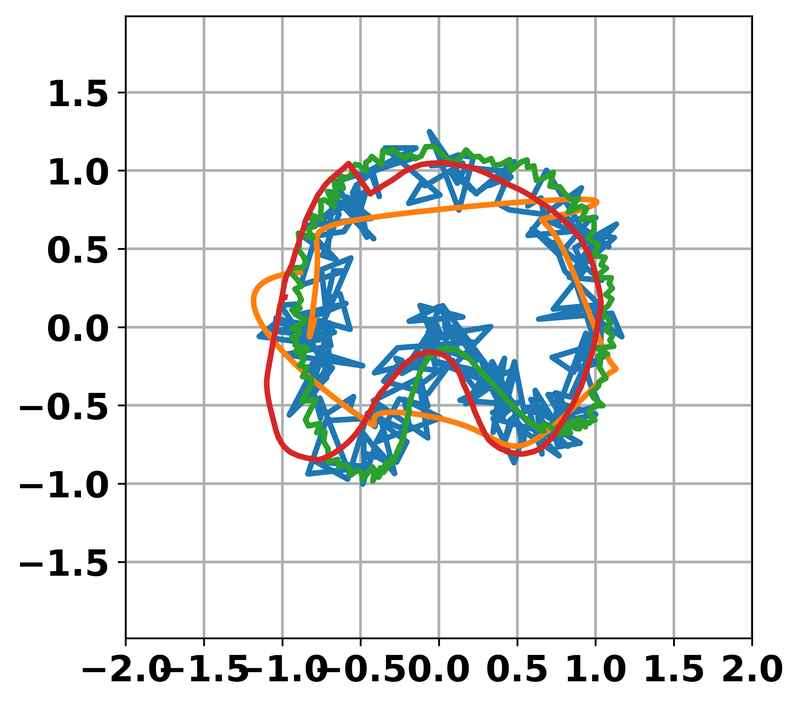
Wiping Task (WP)
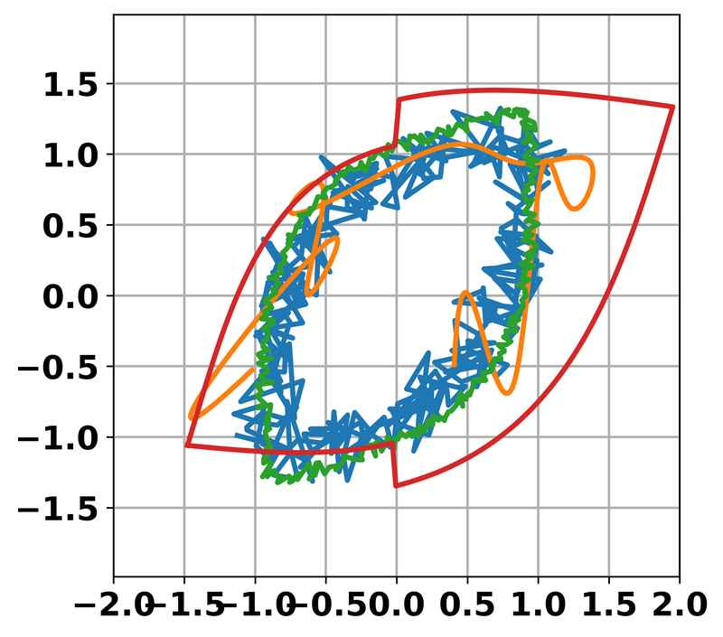
Pick-and-Place Task (PnP)
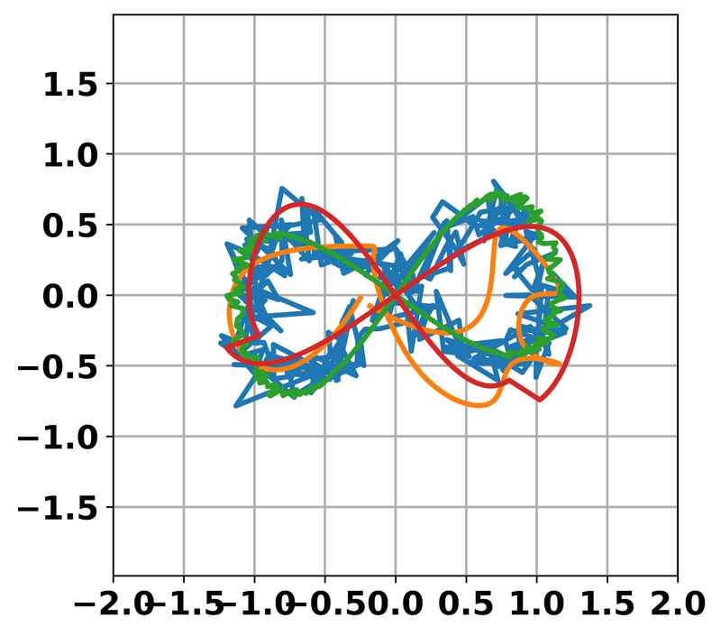
Weaving Task (WV)
Cleaned Demonstrations (Ours)
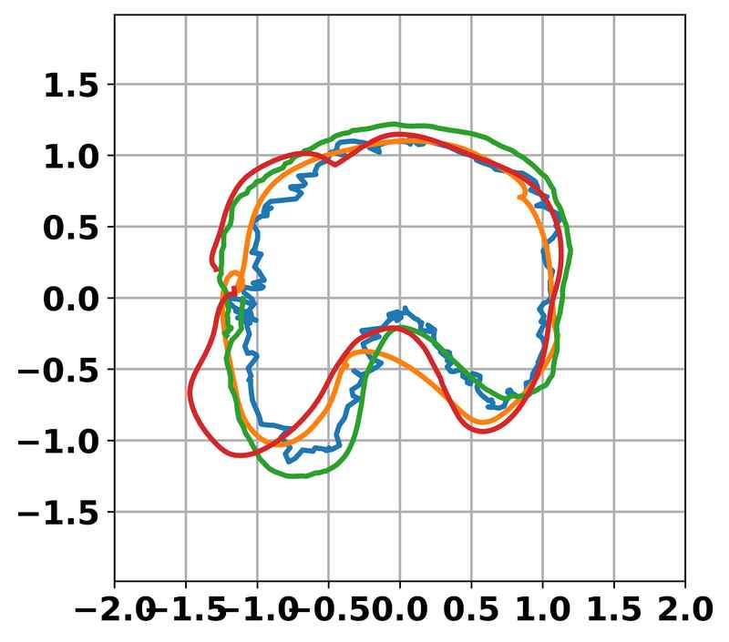
Wiping Task (WP)
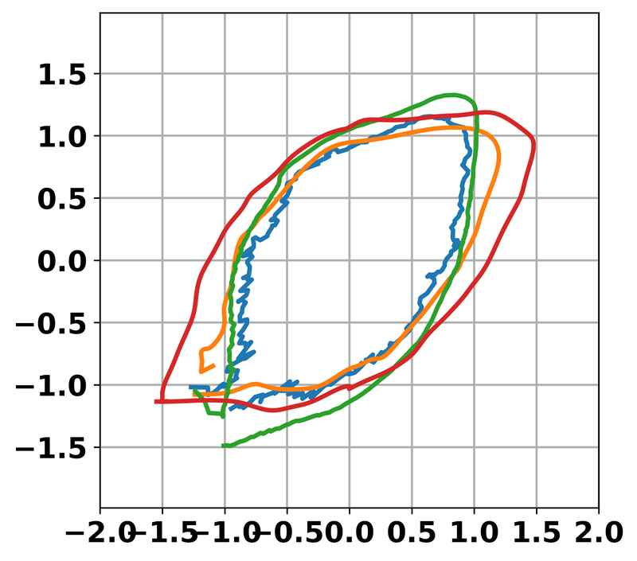
Pick-and-Place Task (PnP)
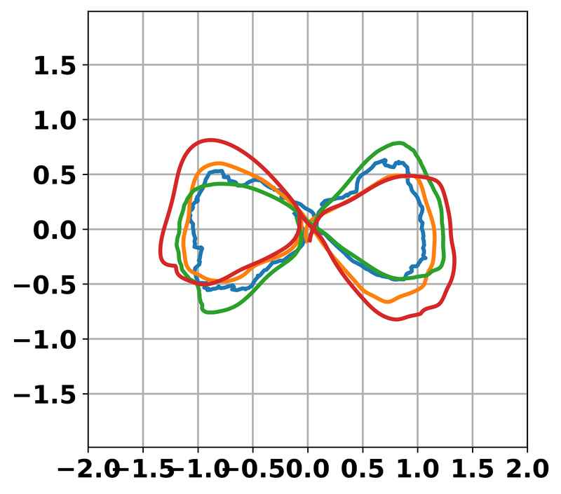
Weaving Task (WV)
IL Model Rollouts
Comparison of rollout trajectories from four imitation learning models trained on noisy and cleaned demonstration data.
Trained on Noisy Data
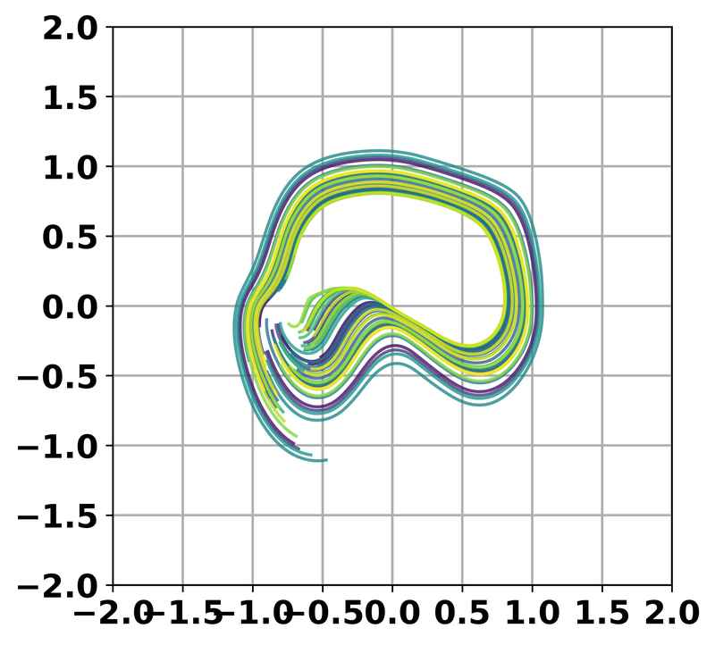
BC
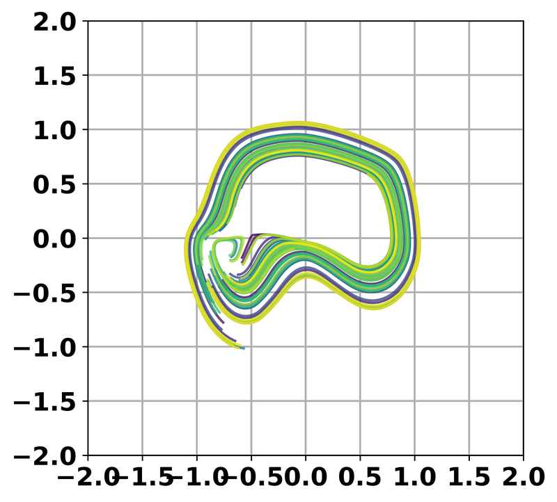
Traj-BC
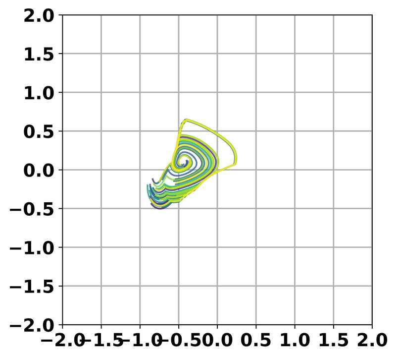
ILEED
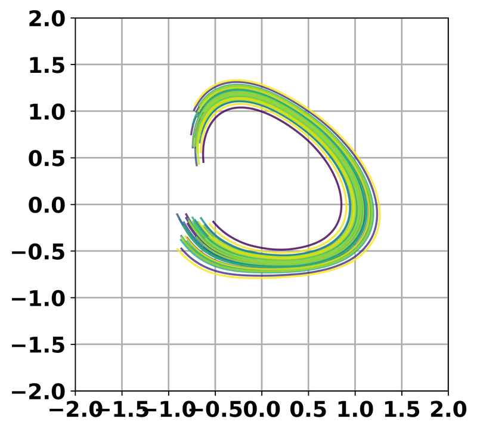
Neural-ODE
Trained on Cleaned Data
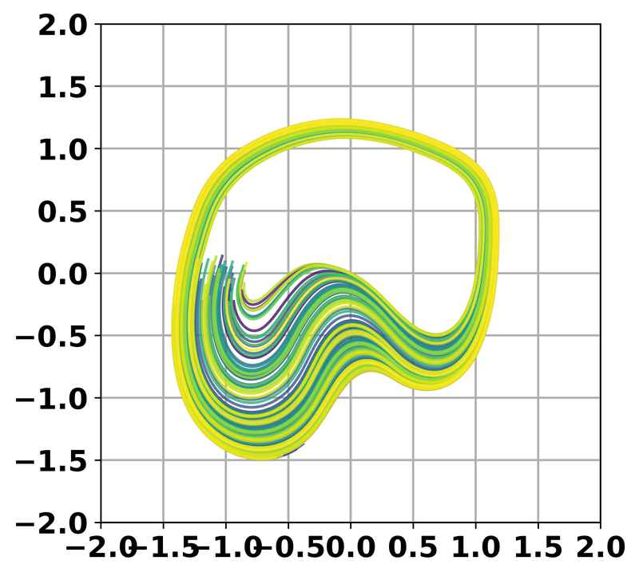
BC
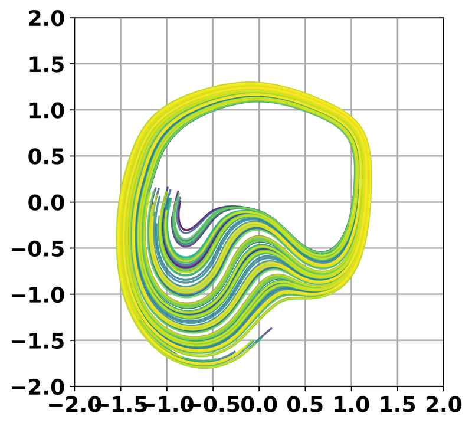
Traj-BC
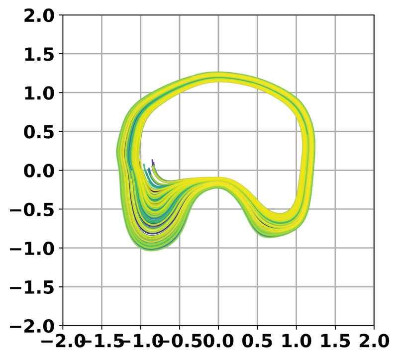
ILEED
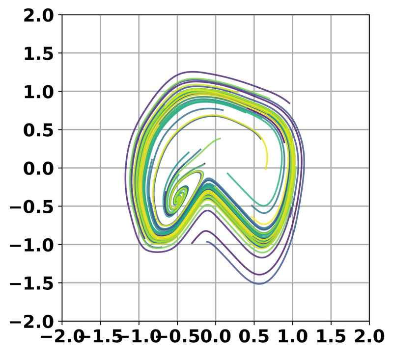
Neural-ODE
Video Results

Full demonstration video showing hardware results from standard IL methods (red) vs. our proposed pipeline (green).